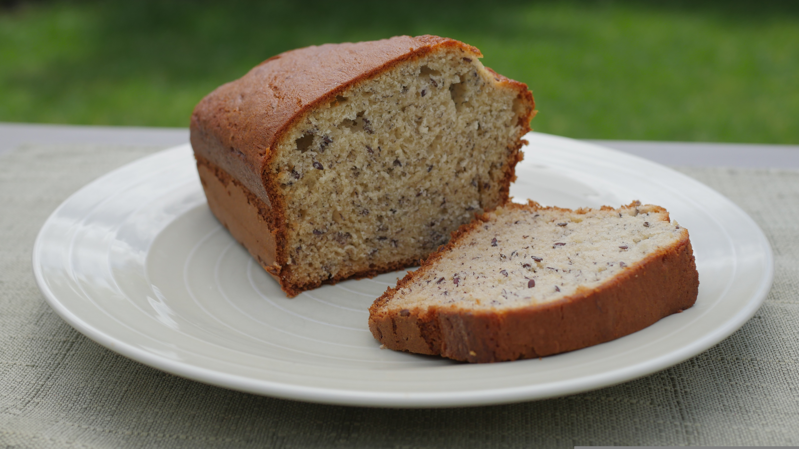

Sweet Banana Bread Recipe

This banana bread is soft, moist, and has a sweet banana flavor.
It is the perfect way to make use of overripe bananas sitting
Ingredients
- 3 ripe bananas
- 1/3 cup melted butter
- 1 teaspoon basking soda
- Pinch of salt
- 3/4 cup sugar
- 1 beaten egg
- 1 teaspoon vanilla extract
- 1 1/2 cup all purpose flour
Steps
- Preheat oven to 175°C (350°F).
- Mash bananas in a large bowl and mix with melted butter.
- Stir in sugar, egg, and vanilla extract.
- Mix in baking soda, salt, and flour until combined.
- Pour batter into a greased loaf pan.
- Bake for 1 hour. Cool before serving.
And done! I hope your banana bread turned out as delicious as mine.
Serve with tea/coffee or with soup as a starter. Enjoy🤗🤗